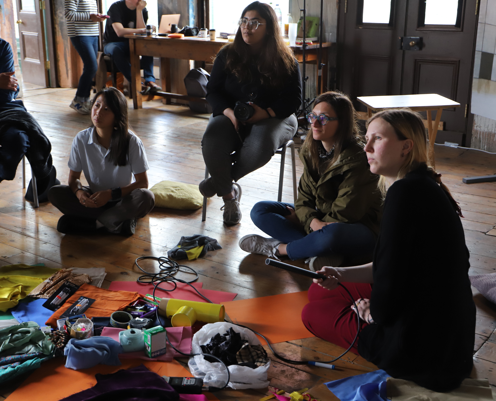
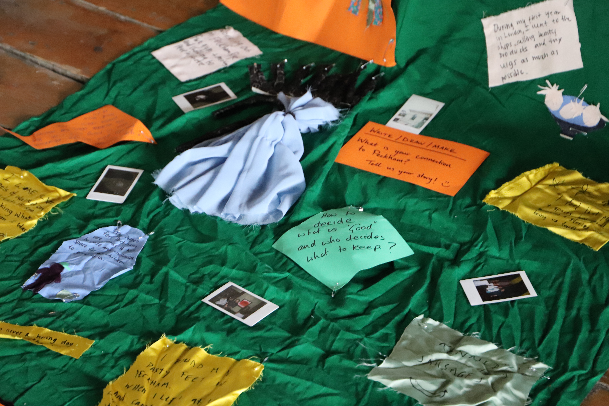
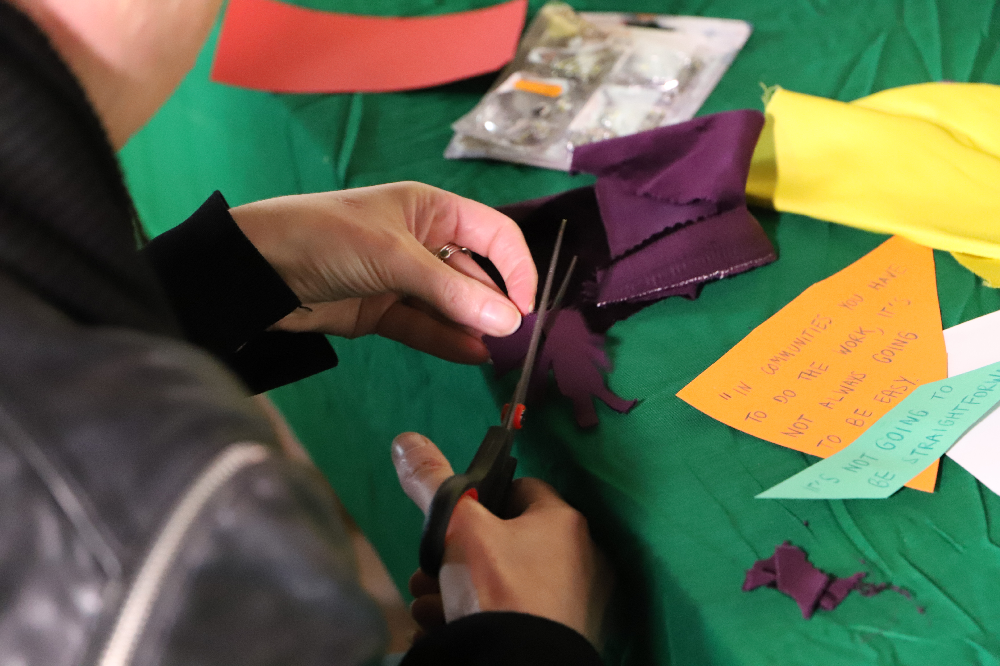
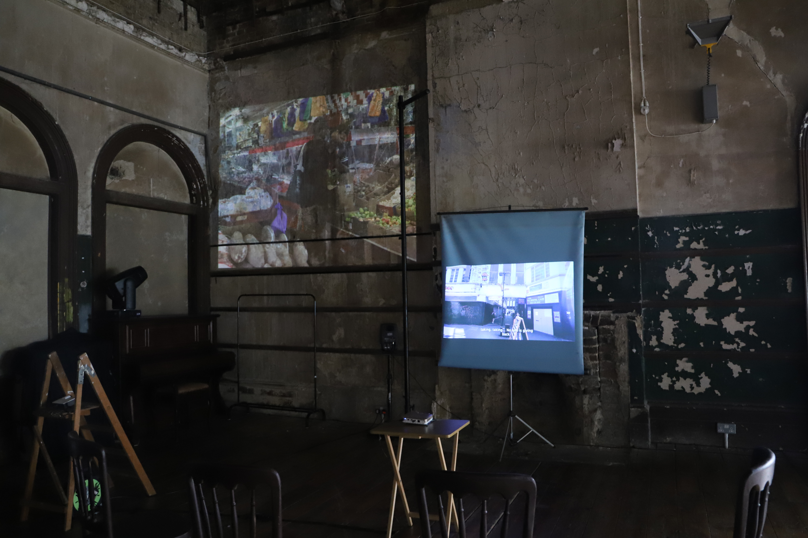
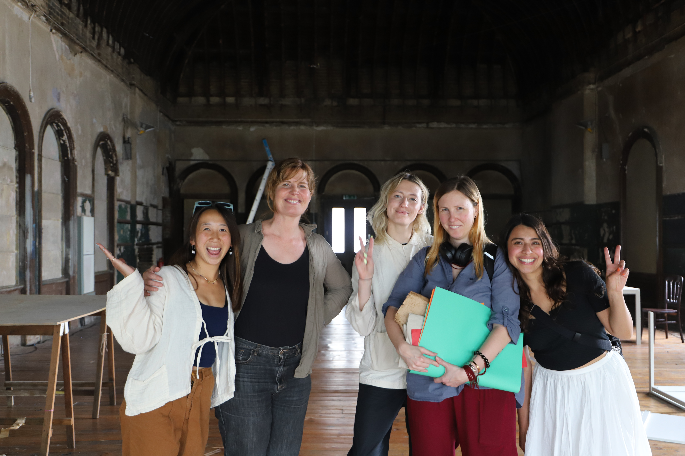

A public-facing exhibition with interactive workshops to explore past, present and future of Peckham.

First community workshop in the Old Waiting Room, Peckham.

During the second season of Making Connections - an arts festival based in the Old Waiting Room of Peckham Rye Station - and together with Karla Rosales Garcia and Abbey Lew, Chiara co-hosted two community workshops and a multimedia exhibition exploring the past, present and future of the local area.
“This is a multimedia journey through the psyche of local people delivered in a powerful and innovative way.”

In a multimedia exhibition presenting our creative research on Peckham’s community, we examined:
- physical and linguistic accessibility to the art space
- the choice of networking channels
- and alignment with local needs and vision
to inform how the “Making Connections” arts festival can improve its EDI practice.

Multimedia projected onto the walls of the Old Waiting Room.

The EDI Evaluation team together with the Making Connections team.